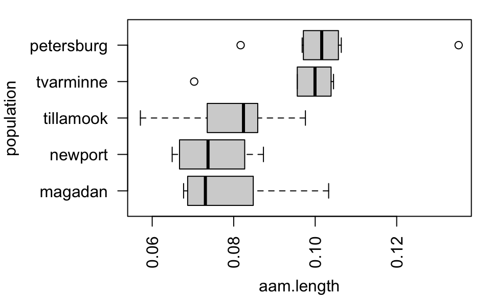
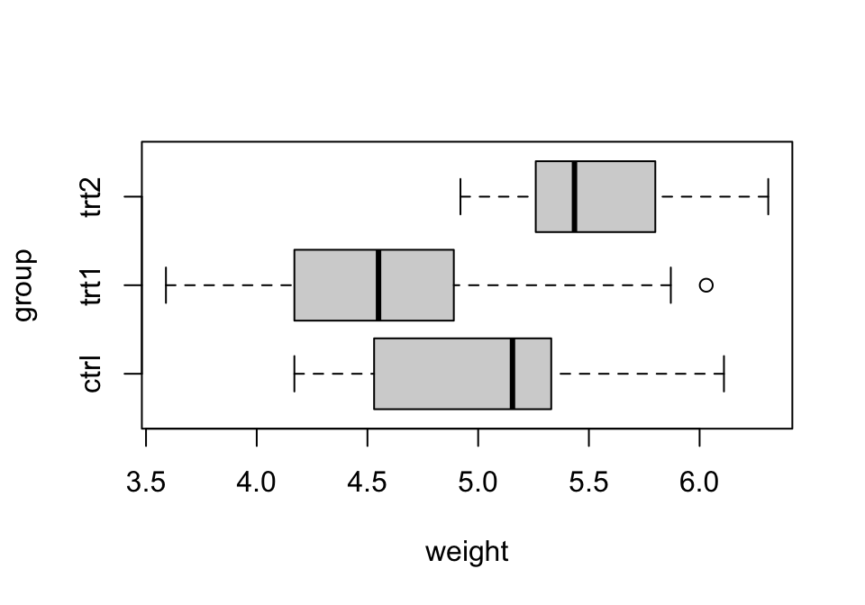

library(tidyverse)
library(emmeans)
load('data/longevity.RData')
load('data/anorexia.RData')Lab 10: Post-hoc inference in ANVOA
The objective of this lab is to learn how to perform post-hoc inference for group means and contrasts in R. These procedures are called post-hoc because they are typically performed after detecting a treatment effect or difference in means using the ANOVA \(F\) test.
In other words, suppose you tested the hypotheses: \[ \begin{cases} H_0: &\mu_i = \mu_j \quad\text{for all}\quad &i, j \\ H_A: &\mu_i \neq \mu_j \quad\text{for some}\quad &i\neq j \\ \end{cases} \] And found evidence favoring \(H_A\). This raises the question, “which means differ and by how much?”
We will cover:
- Simultaneous interval estimates for \(\mu_i\)
- Intervals for pairwise contrasts \(\mu_i - \mu_j\)
- Significance tests for pairwise contrasts \(\mu_i - \mu_j\)
- Inference for contrasts with a control group \(\mu_i - \mu_\text{ctrl}\)
We will use the \(\texttt{emmeans}\) package in R. However, you should be advised that there are other common implementations of these procedures that you might encounter if you search on your own.
Examples will use the longevity dataset, which contain observations of lifetimes of mice randomly allocated to four different diet restriction groups. You’ll practice using the anorexia dataset, which contains observations of percent change in body weight after a treatment period for young women randomly allocated to two treatment groups and a control group.
Refresher: fitting ANOVA models
Post-hoc inferences all utilize fitted ANOVA models. We will skip the step of making a graphical check on model assumptions, and proceed directly with fitting models. However, if you’re not sure what that step consists of, you should take a moment to look at the previous lab to remind yourself.
For the longevity data, inference compares the mean lifetime in months for four levels of dietary restriction.
# fit the model
fit.longevity <- aov(lifetime ~ diet, data = longevity)
# generate the ANOVA table
summary(fit.longevity) Df Sum Sq Mean Sq F value Pr(>F)
diet 3 11426 3809 87.41 <2e-16 ***
Residuals 233 10152 44
---
Signif. codes: 0 '***' 0.001 '**' 0.01 '*' 0.05 '.' 0.1 ' ' 1The ANOVA \(F\) test is significant, indicating an effect of diet restriction on mean lifetime.
The data provide evidence of an effect of diet restriction on mean lifetime among mice (F = 87.41 on 3 & 233 degrees of freedom, p < 0.0001).
Your turn 1
Fit an ANOVA model to the anorexia data. Here, inference is on the mean percent change in body weight. Interpret the result of the test in context.
tibble [72 × 2] (S3: tbl_df/tbl/data.frame)
$ pct.change: num [1:72] 0.994 0.896 0.941 1.166 0.974 ...
$ treatment : Factor w/ 3 levels "Cont","CBT","FT": 1 1 1 1 1 1 1 1 1 1 ...The emmeans(...) function (and other related functions) work directly with fitted ANOVA models to produce inferences for group means and contrasts. emmeans(...) is short for “estimated marginal means”. The function takes as its arguments a fitted ANOVA model, and a “specification” in the form of a formula that determines its precise behavior:
emmeans(object = <FITTED MODEL>, spec = <SPECIFICATION>)For us, the specification is always a one-sided formula simply reiterating the grouping variable.
# default behavior is to produce unadjusted 95% confidence intervals for group means
emmeans(object = fit.longevity, specs = ~ diet) diet emmean SE df lower.CL upper.CL
NP 27.4 0.943 233 25.5 29.3
N/N85 32.7 0.874 233 31.0 34.4
N/R50 42.3 0.783 233 40.8 43.8
N/R40 45.1 0.852 233 43.4 46.8
Confidence level used: 0.95 The result can be piped to helper functions to obtain estimates of group means and contrasts.
Estimating group means
Initially we might like to estimate the group means. All we need to do is implement the adjustment for multiple inference and specify the confidence level. This is done using the confint(...) helper function:
# simultaneous 95% confidence intervals for group means with bonferroni adjustment (correct)
emmeans(object = fit.longevity, specs = ~ diet) |>
confint(level = 0.95, adjust = 'bonferroni') diet emmean SE df lower.CL upper.CL
NP 27.4 0.943 233 25.0 29.8
N/N85 32.7 0.874 233 30.5 34.9
N/R50 42.3 0.783 233 40.3 44.3
N/R40 45.1 0.852 233 43.0 47.3
Confidence level used: 0.95
Conf-level adjustment: bonferroni method for 4 estimates The results can be interpreted in the usual way, for instance:
With 95% confidence, the mean lifetime for mice on a normal 85kcal diet is estimated to be between 30.5 and 34.9 months, with a point estimate of 32.7 months (SE 0.874).
Because of the Bonferroni adjustment, the confidence level is simultaneous for all intervals, meaning that all four intervals cover the mean at the same time 95% of the time.
Your turn 2
Using the anorexia data, compute simultaneous 99% confidence intervals for the mean percent change in body weight in each treatment group and the control group. Interpret the interval for the family therapy (FT) group.
Sometimes a plot is preferable to a table of estimates. This is accomplished by adding one more pipe to plot(...) and specifying labels:
# plot via: emmeans(...) |> confint(...) |> plot(...)
emmeans(object = fit.longevity, specs = ~ diet) |>
confint(level = 0.95, adjust = 'bonferroni') |>
plot(xlab = 'mean lifetime (months)', ylab = 'diet')
If you’re curious, remove the label arguments and see what the default looks like.
Your turn 3
Make a plot showing the simultaneous 99% interval estimates for the mean percent change in body weight that you computed in the previous “your turn”.
Estimating contrasts
A difference in means is an example of a “contrast”. Inferences for contrasts allow us to determine which groups differ and by how much. There are several types of contrasts, but the most common are pairwise differences in means and differences between treatments and a control group.
Inference for pairwise contrasts
First we’ll consider computing intervals and tests for all pairwise contrasts. This is accomplished by simply passing the result of emmeans(...) to contrast(...) and specifying the type of contrast you wish to obtain. The result can be passed to test() to obtain tests and confint() to obtain intervals. In the context of the longevity example:
# test for pairwise differences at the 5% significance level
emmeans(object = fit.longevity, specs = ~ diet) |>
contrast('pairwise') |>
test(adjust = 'bonferroni') contrast estimate SE df t.ratio p.value
NP - (N/N85) -5.29 1.29 233 -4.113 0.0003
NP - (N/R50) -14.90 1.23 233 -12.150 <.0001
NP - (N/R40) -17.71 1.27 233 -13.938 <.0001
(N/N85) - (N/R50) -9.61 1.17 233 -8.183 <.0001
(N/N85) - (N/R40) -12.43 1.22 233 -10.177 <.0001
(N/R50) - (N/R40) -2.82 1.16 233 -2.436 0.0937
P value adjustment: bonferroni method for 6 tests # simultaneous 95% intervals for all pairwise contrasts
emmeans(object = fit.longevity, specs = ~ diet) |>
contrast('pairwise') |>
confint(level = 0.95, adjust = 'bonferroni') contrast estimate SE df lower.CL upper.CL
NP - (N/N85) -5.29 1.29 233 -8.71 -1.867
NP - (N/R50) -14.90 1.23 233 -18.16 -11.633
NP - (N/R40) -17.71 1.27 233 -21.10 -14.333
(N/N85) - (N/R50) -9.61 1.17 233 -12.73 -6.482
(N/N85) - (N/R40) -12.43 1.22 233 -15.67 -9.177
(N/R50) - (N/R40) -2.82 1.16 233 -5.90 0.261
Confidence level used: 0.95
Conf-level adjustment: bonferroni method for 6 estimates The tests indicate which means differ significantly; the intervals indicate by how much. For example:
The data provide strong evidence that mean lifespan differs significantly between mice on a normal 85kcal compared with mice on an unrestricted diet (p = 0.0003). With 95% confidence, the difference in mean lifespan (normal - unrestricted) is estimated to be between 1.87 and 8.71 months, with a point estimate of 5.29 (SE 1.29).
Your turn 4
Using the data from the anorexia study…
Compute simultaneous 90% confidence intervals for all pairwise contrasts.
Compute adjusted \(p\)-values for all pairwise contrasts and determine which groups differ significantly at the 10% level.
Interpret the test and interval for the contrast between family therapy and the control group.
Contrasts with a control
Many studies involve a control group; naturally, it is of interest to compare treatments to controls. This is a special category of contrasts because all contrasts involve the same group; as such, there is a special adjustment method for multiple inference that achieves better power for this particular setting.
To perform inference for contrasts with a control, change the contrast type from 'pairwise' to 'trt.vs.ctrl'. R will assume that your control group is the first level of the grouping variable. The datasets for this class are organized in just this way, so you don’t have to worry about this detail for now.
# tests for contrasts with a control group
emmeans(object = fit.longevity, specs = ~ diet) |>
contrast('trt.vs.ctrl') |>
test(adjust = 'dunnett') contrast estimate SE df t.ratio p.value
(N/N85) - NP 5.29 1.29 233 4.113 0.0002
(N/R50) - NP 14.90 1.23 233 12.150 <.0001
(N/R40) - NP 17.71 1.27 233 13.938 <.0001
P value adjustment: dunnettx method for 3 tests # simultaneous 95% intervals for contrasts with a control group
emmeans(object = fit.longevity, specs = ~ diet) |>
contrast('trt.vs.ctrl') |>
confint(level = 0.95, adjust = 'dunnett') contrast estimate SE df lower.CL upper.CL
(N/N85) - NP 5.29 1.29 233 2.23 8.34
(N/R50) - NP 14.90 1.23 233 11.98 17.81
(N/R40) - NP 17.71 1.27 233 14.70 20.73
Confidence level used: 0.95
Conf-level adjustment: dunnettx method for 3 estimates The results indicate that all levels of diet restriction have an effect on mean lifetime that differs from the control group. Moreover, the intervals indicate that mean lifetimes are longer in every treatment group than in the control group; so diet restriction at every level causes an increase in lifetime. In particular, for instance:
The data provide very strong evidence that mean lifespan differs significantly between mice on a restricted 40kcal diet compared with mice on an unrestricted diet (p < 0.0001). With 95% confidence, the difference (restricted - unrestricted) in mean lifetime is estimated to be between 11.98 and 17.81 months, with a point estimate of 14.90 months (SE 1.23).
Your turn 5
Using the data from the anorexia study…
Test, at the 1% significance level, for significant differences in mean percent change in body weight for each treatment compared with the control group. Are significant differences improvements relative to the control?
Estimate the efficacy (difference relative to control) of each treatment at the confidence level appropriate for the test you performed. Interpret the result in context.
# test for differences relative to control at 1% level
# estimate differences at the appropriate confidence levelExtra: testing a minimum difference
While not especially common, sometimes you might wish to test whether group means differ by at least a certain amount. The usual hypothesis tests for pairwise differences are: \[ \begin{cases} H_0: &\mu_i - \mu_j = 0 \\ H_A: &\mu_i - \mu_j \neq 0 \\ \end{cases} \] We could instead test for a minimum difference of \(c\) by testing: \[ \begin{cases} H_0: &|\mu_i - \mu_j| = c \\ H_A: &|\mu_i - \mu_j| > c \\ \end{cases} \]
This looks tricky on face value because of the absolute value. However, if the groups are ordered in R monotonically by means (i.e., in increasing/decreasing order of group mean), the signs for pairwise contrasts will all match, as they do in the example provided. In this case, the hypothesis above reduce, for \(i > j\), to: \[ \begin{cases} H_0: &\mu_i - \mu_j = c \\ H_A: &\mu_i - \mu_j > c \\ \end{cases} \]
So, to test for a minimum difference, we simply do a directional test with a nonzero null value: add null = ... and side = ... arguments to test(...). In the context of comparisons with the control:
# test whether mean lifetime exceeds control by more than 1 year
emmeans(object = fit.longevity, specs = ~ diet) |>
contrast('trt.vs.ctrl') |>
test(null = 12, side = '>') contrast estimate SE df null t.ratio p.value
(N/N85) - NP 5.29 1.29 233 12 -5.219 1.0000
(N/R50) - NP 14.90 1.23 233 12 2.362 0.0283
(N/R40) - NP 17.71 1.27 233 12 4.496 <.0001
P value adjustment: sidak method for 3 tests
P values are right-tailed # interval estimate
emmeans(object = fit.longevity, specs = ~ diet) |>
contrast('trt.vs.ctrl') |>
confint(level = 0.95, side = '>') contrast estimate SE df lower.CL upper.CL
(N/N85) - NP 5.29 1.29 233 2.55 Inf
(N/R50) - NP 14.90 1.23 233 12.28 Inf
(N/R40) - NP 17.71 1.27 233 15.00 Inf
Confidence level used: 0.95
Conf-level adjustment: sidak method for 3 estimates Notice that a different adjustment method is used. This has a slightly more precise interpretation:
The data provide moderate evidence that mean lifespan increases by at least one year when intake is restricted to 50kcal/day compared with an unrestricted diet (T = 2.362 on 233 degrees of freedom, p = 0.0283). With 95% confidence, the mean increase is estimated to be at least 12.28 months, with a point estimate of 14.9 months (SE 1.23).
Practice problems
[L9] The
musselsdataset includes observations of a shell measurement, anterior adductor muscle (AAM) scar length, for mytilus trossulus mussels from five populations. A plot of the data is provided below.- Fit an ANOVA model and test for significant differences among the populations at the 1% significance level.
- Estimate mean AAM length for each population.
- Test for pairwise differences to determine which populations differ at the 1% significance level.
- Provide simultaneous interval estimates at an appropriate confidence level for each significant difference.

[L9] The
plantgrowthdataset includes measurements of dry weight of plants grown using one of two fertilizer treatments or no fertilizer (control); treatments were randomly allocated to plants. A plot of the data is provided below.- Assess assumptions for ANOVA based on the plot.
- Fit an ANOVA model and test for a difference in mean dry weight at the 5% significance level.
- Test for significant differences in mean dry weight between each treatment compared with the control at the 5% level.
- Interpret your results. Do treatments cause a change in growth, as measured by dry weight, compared with the control?

- [Extra credit] Using the
longevitydata from lecture, compute interval estimates for log-contrasts and back-transform to obtain estimates for the percent change in median lifespan relative to the control group. Report the comparison between the normal (N/N85) diet and the unrestricted (NP) diet.